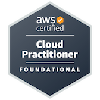
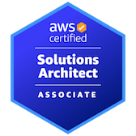
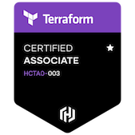

About Me
Hey there! I'm Dhruv Mehul Shah, a tech enthusiast and Network Engineer with a knack for solving complex problems and a passion for cloud technologies. Based in Dallas, TX, I bring a unique blend of technical prowess and creative problem-solving to the world of network and cloud engineering.
I hold a Master's degree in Network Engineering from Southern Methodist University, where I dove deep into the realms of Advanced Cloud Engineering, Routing & Switching, and DevOps. Before that, I earned my Bachelor's in Electronics & Telecommunication Engineering from the University of Mumbai, setting the stage for my tech journey.
Certifications? I've got a few under my belt, including AWS Certified Solutions Architect Associate, Microsoft Certified Azure Administrator, and HashiCorp Certified Terraform Associate. These credentials showcase my commitment to staying at the cutting edge of technology.
In my professional adventures, I've worn many hats. At GSK Solutions Inc., I'm currently honing my skills as a DevOps Engineer Intern, building and deploying cloud infrastructure with tools like Terraform and Ansible. During my time as a Teaching Assistant at SMU, I had the joy of guiding students through the intricacies of network protocols, earning a stellar 4.8/5 rating. My role as a Network and Hardware Customer Support specialist at SMU’s OIT department further polished my technical and interpersonal skills.
My projects are where my passion truly shines. I've built a dynamic serverless resume website on AWS, showcasing my automation skills and love for innovation. I’ve also implemented robust monitoring solutions with Prometheus and Grafana, slashing overhead by 30%. One of my favorite projects was designing a CI/CD pipeline that doubled release frequency and halved manual interventions.
When I'm not deep in code or deploying infrastructure, you might find me tinkering with new tech, scripting in Python, or exploring the endless possibilities of Docker and Kubernetes. I’m constantly driven by the challenge of making systems more efficient and reliable.
And when I'm not geeking out over tech? You'll find me in full-on sports mode – cricket, soccer, video games, and exploring scenic hikes. Because life's about finding inspiration in every beat.
Ready to connect? Check out my LinkedIn for professional insights. Visit my GitHub to dive into my projects.
Let’s create something amazing together!
Certifications
- 
- 
- 


Skills
Cloud/DevOps
- AWS
- Azure
- Oracle
- Docker
- Kubernetes
- Ansible
- Git
- Terraform
- CI/CD Jenkins
- Prometheus
- Grafana
Network Concepts
- TCP/IP
- DHCP
- DNS
- ARP
- ICMP
- IPv4/6
- Subnetting
- VLAN
- STP
- NAT
- SSH
- OSPF
- BGP
Software Tools and OS
- Wireshark
- Putty
- GNS3
- Eve-ng
- VMWare
- VirtualBox
- LucidChart
- Jira
- OS [Windows, Linux]
Programming Languages
- Python
- YAML
- Bash scripting
Projects
CloudOps - Host a static website on AWS
In this project, I demonstrate how to leverage Amazon Web Services (AWS) to host a static website efficiently. Using AWS services such as Amazon S3 for storage, AWS Route 53 for DNS management, and Amazon CloudFront for content delivery, I showcase the process of deploying and managing a static website on the cloud. This project delves into the fundamentals of cloud operations, highlighting best practices for hosting and optimizing static web content on AWS infrastructure.
Technologies used: AWS S3, Route 53, CloudFront, AWS CodePipeline, AWS Certificate Manager
CloudOps - Terraform Infrastructure as Code
This project focuses on Infrastructure as Code (IaC) using Terraform, a powerful tool for managing infrastructure declaratively. I demonstrate the automation of cloud infrastructure provisioning and management on Amazon Web Services (AWS) using Terraform's configuration files. Through this project, I emphasize the benefits of IaC in maintaining consistency, scalability, and efficiency in cloud environments.
Technologies used: Terraform, AWS (EC2, VPC, IAM, S3), GitHub Actions, Shell scripting
CloudOps - Alerting and Monitoring in Kubernetes
This project focuses on implementing alerting and monitoring solutions within Kubernetes clusters. Leveraging tools like Prometheus for metrics collection and Grafana for visualization, I showcase the setup of monitoring dashboards and alerting rules to ensure high availability and performance of Kubernetes applications. This project delves into the crucial aspect of observability in containerized environments, emphasizing proactive management and troubleshooting.
Technologies used: AWS (IAM, EC2, EKS), Kubernetes, Prometheus, Grafana, AlertManager, Kubernetes Operators, Helm
CloudOps - ArgoCD and CircleCI Integration
This project focuses on integrating ArgoCD, a continuous delivery tool for Kubernetes, with CircleCI, a popular continuous integration and delivery platform. By automating the deployment process and ensuring version control, I demonstrate how to streamline Kubernetes application deployments using GitOps principles. This project emphasizes the importance of automated pipelines and declarative application management in modern cloud-native environments.
Technologies used: AWS, ArgoCD, CircleCI, Kubernetes, GitOps, Helm, GitHub
Terraform Beginner Bootcamp 2023
Terraform Beginner Bootcamp 2023 was an immersive journey where I delved into a multitude of technologies and practices, honing my skills in Terraform Cloud fundamentals for efficient project management. This experience was complemented by hands-on learning in key GitHub operations, empowering me with robust version control strategies and collaboration techniques. A significant highlight was my practical application of AWS S3 and CDN hosting, allowing me to showcase expertise in scalable web page deployment. Moreover, exploring the Sinatra web framework added a dynamic aspect to my learning, culminating in the creation of dynamic web pages hosted on Terratowns cloud infrastructure. These experiences solidified my understanding of Infrastructure as Code (IaC) principles and reinforced the importance of version control, collaboration, and cloud deployment strategies in modern development environments.
Technologies used: Terraform, AWS, Shell Scripting, Git, Troubleshooting, Technical Documentation, Sintara Web Framework, GitHub